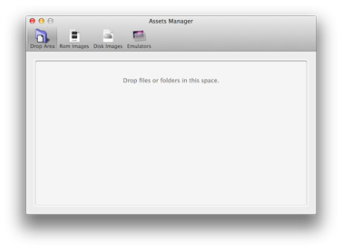

Assets Manager
Assets, in Medusa, are files and applications used to set the virtual machines up. The basic files necessary are ROM image files, disk image files and emulator applications.

Medusa offers you a tool to organise these files. The Assets Manager window is divided in four tabs: "Drop Area", "Rom Images", "Disk Images" and "Emulators".